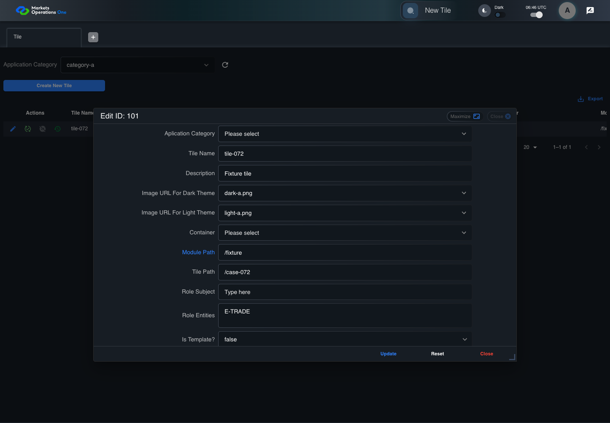
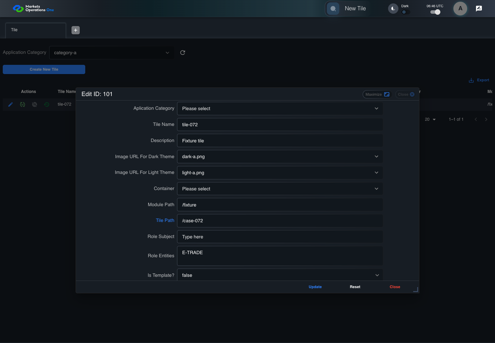
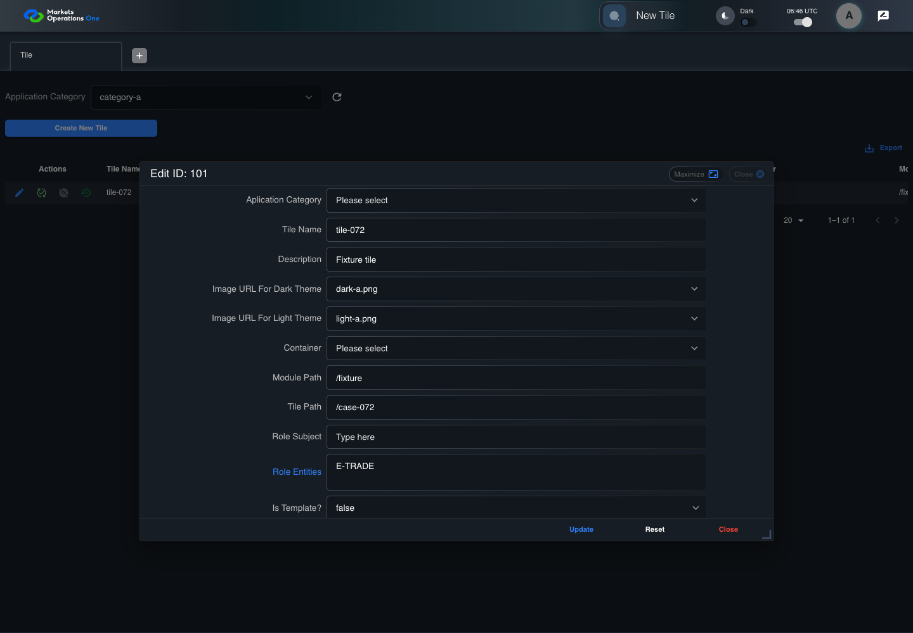
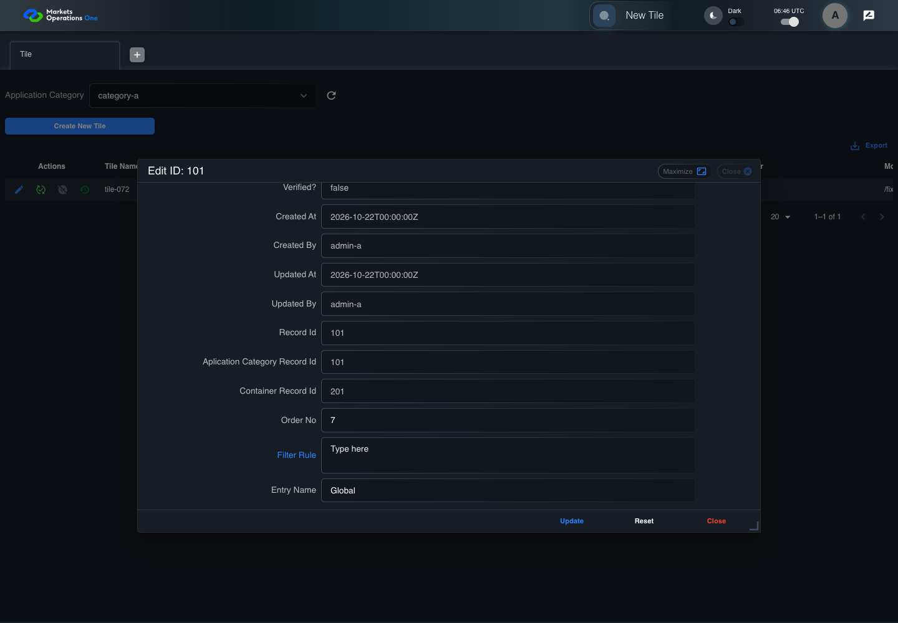
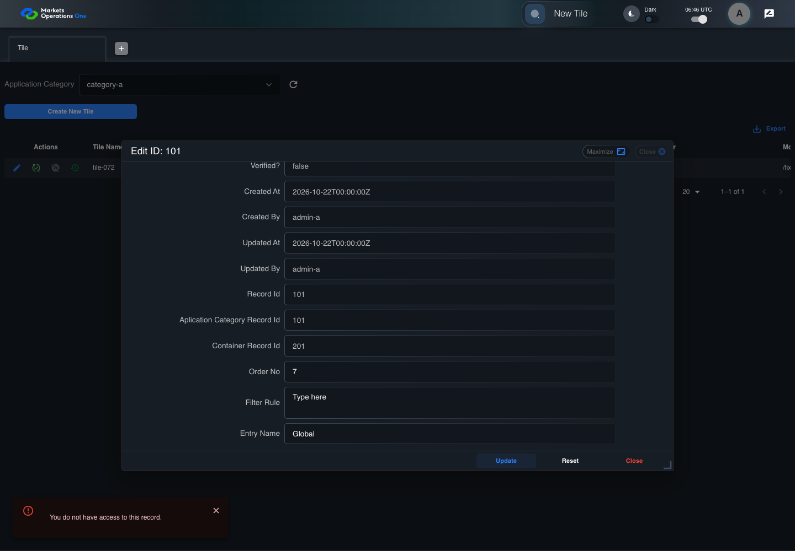

BFF-ADM-072 current BFF administration through actual UI
PASS · application/run-072/bff-adm-072-current-bff-administration-through-actual-ui-69c2606ecdc6-attempt-1 · ACTUAL_APPLICATION_LOCAL_SERVICES
Actual current React and exact-current BFF admin controllers/services/JPA with actual migration DDL in disposable PostgreSQL. Controlled OUD/EMS2 identities and local Spring bootstrap. Fixture SQL seeds/mutates isolated records; service errors are actual database errors. Undefined agreed messages remain unresolved acceptance.
2026-10-22T06:46:33.596Z to 2026-10-22T06:46:43.594Z
Assertions and result · Artifact manifest · Exact run inputs and source hashes
Result SHA-256:52883f8edc51a965e2d9649aa0574aaa20c958e22f47d0c16a478ca8ace37bf9Machine observations
- actual-identity-projection.json
fa25837c6e74a766aa4491bacab34926d642cfbdf59eac03fe27b4ec4f6ead04 - baseline-inputs.json
7052c4982b218a719d72c71edb8d4118bb8089b44e7a2058f11c20ab789d4a20 - bff-boundary.json
bc712b466ad61bd77f5722077e3ba5cf6cadece78afe45949d0d148e79101551 - committed-ui-submission-comparisons.json
91c2c2a48092b6a7c683f10b94195d4dfa3b3e2c537f33e6b1997dea1645f997 - empty-filter-rule-representation.json
21562b8aaff417e2c6852a57bca5ae67067b77d2bd96ff026415bfa8d22e5cb1 - fixture-step-10.json
7d40eebb3b390af26592f9f1a95f29e388237e5b2e88bcfb1646bee553e4defd - fixture-step-11.json
6c67fc279770bc7eb20801bfd557411f66a5bc0cd758d87c81c5eed5dc8400f8 - fixture-step-6.json
2be1771ac8be0b94ffc0db6e04ee1cf2e83cf83dfc84de4722f929541dc24e64 - fixture-step-7.json
dc018e19d190847628002d179f21572dbbd8bef230e585a291535f57a5389e6f - fixture-step-8.json
30cdc35e284855758e2d2dc6043df1a40da30480caf8cdb9faacd1133e2dd535 - fixture-step-9.json
f7224e2e3fe1a3463765f7623ab23a4e6067f68e883443427fc6d127a50e91bb - initial-persisted-records.json
2e27330460068991689b3eab152972267ad91f912f431ba3029c72a3772c8493 - persisted-after-submit.json
1788d05fe2e159428db7926d2a86f2d5321d953a3373227b1762d6cf0c0494ad - reference-snapshot-3.json
49114a7a4f19c55395ee5207c1a679b8a6cae50ce81581902f1147dbf483326d - reference-snapshot-4.json
93266a69fc0a43aba1a45291a1f0265fa05768456f0caa9284b36d327f92112a - super-user-stale-read-category.json
aacd838b3a5c9fc6de7ca19ebb800b079e461f549396793fce2d6060e8c0a1b6 - super-user-stale-read-importmap.json
5cda09dc6ec9e6d85b08dca8decb570453391ad6a065f665f60e77336d9dd34f - super-user-stale-read-tile.json
520cff97c35f40ff5f7bcf599b4a420bd30d43625b8cb36141c31a7c2ec497b8 - ui-origin-bff-requests.json
d3fcb1602f3066cad7e81af064e888c634de73c64f4067e259bee1e68ce92957
Screenshot capture: CAPTURED. Named frames: 22.
Step screenshot bindings: COMPLETE. 21/21 canonical steps have execution screenshots.
Bindings measure structural coverage only. They do not establish screenshot content quality or relevance.
Screenshot content review: NOT_REVIEWED. Recorded context: 0/22 frames. Identical image bytes: 0 repeated frames. Recorded context does not establish human visual review.
Canonical step timeline
Given Admin S uses subject "admin-s" with role "SUPER_USER only" in an isolated authenticated browser
Execution: PASSED.1. step-01 Visible state after step 1: Given Admin S uses subject "admin-s" with role "SUPER_USER only" in an isolated authenticated browser
2026-10-22T06:46:37.984Z · 1440×1000
Step: /Users/lushevol/code/github/ratan-release-impact/workbench/tasks/ui-test-coverage-20261022/test-cases.md:17730
SHA-256:4796810420f51f360f8ff0b7ceb384c6e157b2350948d06999ddad818897c1d9And the controlled Tile fixture records the initial grid rows and persisted values
Execution: PASSED.2. step-02 Visible state after step 2: And the controlled Tile fixture records the initial grid rows and persisted values
2026-10-22T06:46:38.147Z · 1440×1000
Step: /Users/lushevol/code/github/ratan-release-impact/workbench/tasks/ui-test-coverage-20261022/test-cases.md:17731
SHA-256:1f69b31a368520a0fe50111dce9f9bb78b3efe2fd31840c04bba3f585eda60c1And Category 101 has label "category-a" and Import Map 201 has Module Name "container-a"
Execution: PASSED.3. step-03 Visible state after step 3: And Category 101 has label "category-a" and Import Map 201 has Module Name "container-a"
2026-10-22T06:46:38.231Z · 1440×1000
Step: /Users/lushevol/code/github/ratan-release-impact/workbench/tasks/ui-test-coverage-20261022/test-cases.md:17732
SHA-256:bf1a43f7e8baac54cddfe2aa36fc0ee38d50ef946003f9b0f05d11d50d75882dAnd both references belong to "FMO_ADMIN" and the Tile page category filter value is Category 101
Execution: PASSED.4. step-04 Visible state after step 4: And both references belong to "FMO_ADMIN" and the Tile page category filter value is Category 101
2026-10-22T06:46:38.294Z · 1440×1000
Step: /Users/lushevol/code/github/ratan-release-impact/workbench/tasks/ui-test-coverage-20261022/test-cases.md:17733
SHA-256:8616faeaa3d5f2ec08778951197c04a113ed14a167e2803c0e83b06e0251d0d5And the Tile grid has record "101" owned by "FMO_ADMIN"
Execution: PASSED.5. step-05 Visible state after step 5: And the Tile grid has record "101" owned by "FMO_ADMIN"
2026-10-22T06:46:38.383Z · 1440×1000
Step: /Users/lushevol/code/github/ratan-release-impact/workbench/tasks/ui-test-coverage-20261022/test-cases.md:17734
SHA-256:6cf7bda782ecfcbc391acf57047c4bf8ec9423e1851297e12ed04689e0dc52efAnd the baseline fixture data defines "Tile Name" as "tile-072"
Execution: PASSED.6. step-06 Visible state after step 6: And the baseline fixture data defines "Tile Name" as "tile-072"
2026-10-22T06:46:38.476Z · 1440×1000
Step: /Users/lushevol/code/github/ratan-release-impact/workbench/tasks/ui-test-coverage-20261022/test-cases.md:17735
SHA-256:9d5cbd4d1cad8cf9e4adeb2f9ccba654011f3acb4ea65982111b7622233a006cAnd the baseline fixture data defines "Module Path" as "/fixture"
Execution: PASSED.7. step-07 Visible state after step 7: And the baseline fixture data defines "Module Path" as "/fixture"
2026-10-22T06:46:38.550Z · 1440×1000
Step: /Users/lushevol/code/github/ratan-release-impact/workbench/tasks/ui-test-coverage-20261022/test-cases.md:17736
SHA-256:819d021f756b996c5172162b938e9b2ed47186917da40478ce2766fdc50ffb71And the baseline fixture data defines "Tile Path" as "/case-072"
Execution: PASSED.8. step-08 Visible state after step 8: And the baseline fixture data defines "Tile Path" as "/case-072"
2026-10-22T06:46:38.630Z · 1440×1000
Step: /Users/lushevol/code/github/ratan-release-impact/workbench/tasks/ui-test-coverage-20261022/test-cases.md:17737
SHA-256:e566b47d2613909efb1810dfc9be853a8d8f41177d4a0f1cefc6033edb742717And the baseline fixture data defines "Role Entities" as "E-TRADE"
Execution: PASSED.9. step-09 Visible state after step 9: And the baseline fixture data defines "Role Entities" as "E-TRADE"
2026-10-22T06:46:38.712Z · 1440×1000
Step: /Users/lushevol/code/github/ratan-release-impact/workbench/tasks/ui-test-coverage-20261022/test-cases.md:17738
SHA-256:e93b00e161a38c20de1b54aa894357ce050d122a572f50a0852fe14560ea9946And the baseline fixture data defines "Filter Rule" as ""
Execution: PASSED.10. step-10 Visible state after step 10: And the baseline fixture data defines "Filter Rule" as ""
2026-10-22T06:46:38.779Z · 1440×1000
Step: /Users/lushevol/code/github/ratan-release-impact/workbench/tasks/ui-test-coverage-20261022/test-cases.md:17739
SHA-256:8d315f9690d0ea2de2d4e0cd678d0494982ff9e774db7a8a3bdd9164109e48a4And the baseline Tile references use "Aplication Category" "category-a" and "Container" "container-a"
Execution: PASSED.11. step-11 Visible state after step 11: And the baseline Tile references use "Aplication Category" "category-a" and "Container" "container-a"
2026-10-22T06:46:38.864Z · 1440×1000
Step: /Users/lushevol/code/github/ratan-release-impact/workbench/tasks/ui-test-coverage-20261022/test-cases.md:17740
SHA-256:be979c60168fb6b2707231343a19495b51deb88bee1bf16e39927f4d104c803bWhen Admin S clicks the button labeled "Edit" in the Tile grid row with "Record Id" "101"
Execution: PASSED.12. step-12 Visible state after step 12: When Admin S clicks the button labeled "Edit" in the Tile grid row with "Record Id" "101"
2026-10-22T06:46:39.258Z · 1440×1000
Step: /Users/lushevol/code/github/ratan-release-impact/workbench/tasks/ui-test-coverage-20261022/test-cases.md:17741
SHA-256:feedb11ef00e7918c7c62ccda007e4df224b4fa1c8b25060b56578c02971d599Then the dialog titled "edit ID: 101" is visible on the Tile administration page
Execution: PASSED.13. step-13 Visible state after step 13: Then the dialog titled "edit ID: 101" is visible on the Tile administration page
2026-10-22T06:46:39.339Z · 1440×1000
Step: /Users/lushevol/code/github/ratan-release-impact/workbench/tasks/ui-test-coverage-20261022/test-cases.md:17742
SHA-256:140f0022e9d1085ae1af9ea13783ad4aee63b632fffc4b665ec04469306f64c8When Admin S fills the textbox labeled "Tile Name" with "tile-072" in dialog "edit ID: 101"
Execution: PASSED.14. step-14 Visible state after step 14: When Admin S fills the textbox labeled "Tile Name" with "tile-072" in dialog "edit ID: 101"
2026-10-22T06:46:39.821Z · 1440×1000
Step: /Users/lushevol/code/github/ratan-release-impact/workbench/tasks/ui-test-coverage-20261022/test-cases.md:17743
SHA-256:04efb953211c686b4569549aa65b936bec36639e909546b804a17809af6ef4b6And Admin S fills the textbox labeled "Module Path" with "/fixture" in dialog "edit ID: 101"
Execution: PASSED.
15. step-15 Visible state after step 15: And Admin S fills the textbox labeled "Module Path" with "/fixture" in dialog "edit ID: 101"
2026-10-22T06:46:40.300Z · 1440×1000
Step: /Users/lushevol/code/github/ratan-release-impact/workbench/tasks/ui-test-coverage-20261022/test-cases.md:17744
SHA-256:a6abef60a4da1b5bd194ecc462703703dd493ff422452536f1a8a4051145b1adAnd Admin S fills the textbox labeled "Tile Path" with "/case-072" in dialog "edit ID: 101"
Execution: PASSED.
16. step-16 Visible state after step 16: And Admin S fills the textbox labeled "Tile Path" with "/case-072" in dialog "edit ID: 101"
2026-10-22T06:46:40.791Z · 1440×1000
Step: /Users/lushevol/code/github/ratan-release-impact/workbench/tasks/ui-test-coverage-20261022/test-cases.md:17745
SHA-256:cb7c2c19fee75d9c8b3489999f77359f300cde70701ca3807887718345040a06And Admin S fills the textarea labeled "Role Entities" with "E-TRADE" in dialog "edit ID: 101"
Execution: PASSED.
17. step-17 Visible state after step 17: And Admin S fills the textarea labeled "Role Entities" with "E-TRADE" in dialog "edit ID: 101"
2026-10-22T06:46:41.291Z · 1440×1000
Step: /Users/lushevol/code/github/ratan-release-impact/workbench/tasks/ui-test-coverage-20261022/test-cases.md:17746
SHA-256:cf2d13c683ec915d99439fc65e33ee9f1fb95a9cb665ede4e3b698145dae64faAnd Admin S fills the textarea labeled "Filter Rule" with "" in dialog "edit ID: 101"
Execution: PASSED.
18. step-18 Visible state after step 18: And Admin S fills the textarea labeled "Filter Rule" with "" in dialog "edit ID: 101"
2026-10-22T06:46:41.773Z · 1440×1000
Step: /Users/lushevol/code/github/ratan-release-impact/workbench/tasks/ui-test-coverage-20261022/test-cases.md:17747
SHA-256:d1bca1fcad05d3cfc731e8cba3a50eb13cfc8f2e600b528024a1a79961ccb81fAnd Admin S clicks the button labeled "Update" in dialog "edit ID: 101"
Execution: PASSED.19. step-19 Visible state after step 19: And Admin S clicks the button labeled "Update" in dialog "edit ID: 101"
2026-10-22T06:46:42.107Z · 1440×1000
Step: /Users/lushevol/code/github/ratan-release-impact/workbench/tasks/ui-test-coverage-20261022/test-cases.md:17748
SHA-256:c82e57be72b863b6718a45c74020fe048890a5b95daf717da9f560941408f599Then the alert with severity "error" in the portal snackbar contains the exact text "You do not have access to this record."
Execution: PASSED.20. step-20 Visible state after step 20: Then the alert with severity "error" in the portal snackbar contains the exact text "You do not have access to this record."
2026-10-22T06:46:42.197Z · 1440×1000
Step: /Users/lushevol/code/github/ratan-release-impact/workbench/tasks/ui-test-coverage-20261022/test-cases.md:17749
SHA-256:bcd862f65ff687d65a8c217ffd5f2e004d9670a6ccccd4f1c462f6c0086ec75dAnd the Tile data grid with column "Record Id" row identifiers and loaded field values equal the initial grid snapshot on the Tile administration page
Execution: PASSED.21. step-21 Visible state after step 21: And the Tile data grid with column "Record Id" row identifiers and loaded field values equal the initial grid snapshot on the Tile administration page
2026-10-22T06:46:42.351Z · 1440×1000
Step: /Users/lushevol/code/github/ratan-release-impact/workbench/tasks/ui-test-coverage-20261022/test-cases.md:17750
SHA-256:a1e598572da9aa0a094b4557c82b848b768790b81d2cf19b5a9060c4ce3f74d4


Additional named frames


The final visible state after the named test assertions.
2026-10-22T06:46:42.487Z · 1440×1000Step: Test source: /Users/lushevol/code/github/ratan-release-impact/workbench/e2e/audit-specs/bff-admin.spec.ts:11
SHA-256:
6f0b642548951156f2173e32706e42ccc0000c4c0a411def75380cba9d33bf08Screenshots establish visible state only. Assertions and traces support functional claims.